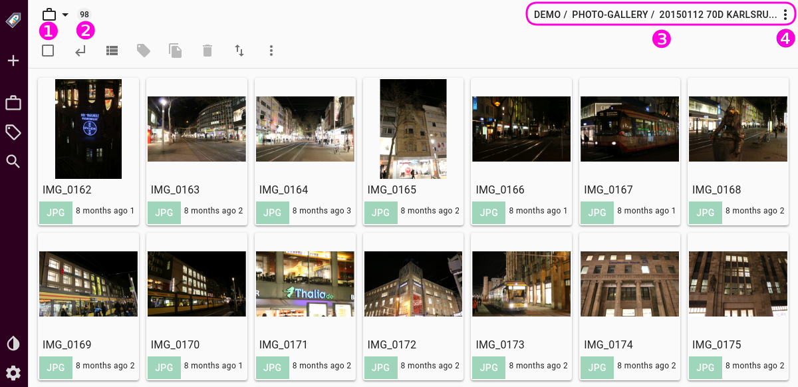
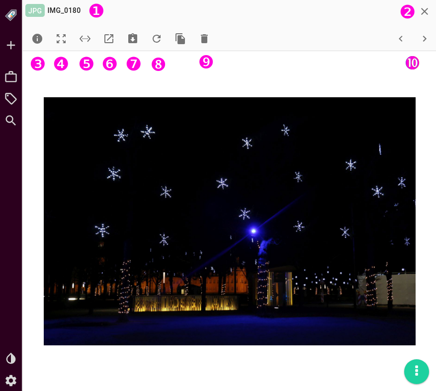
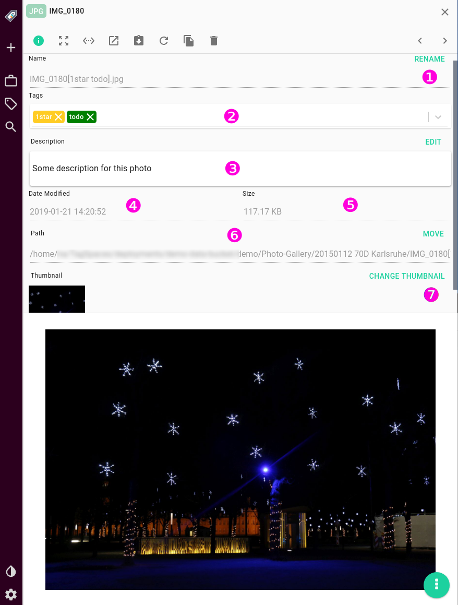
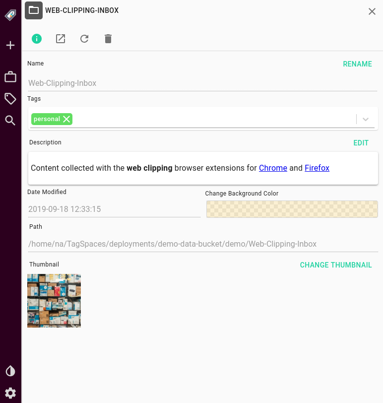
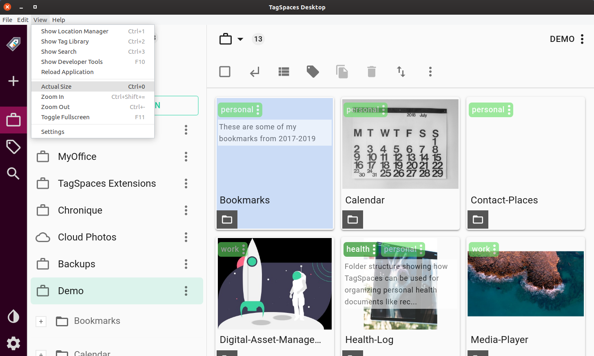
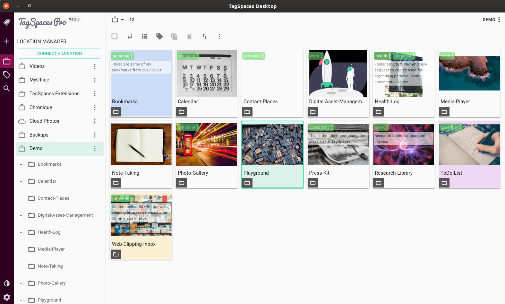
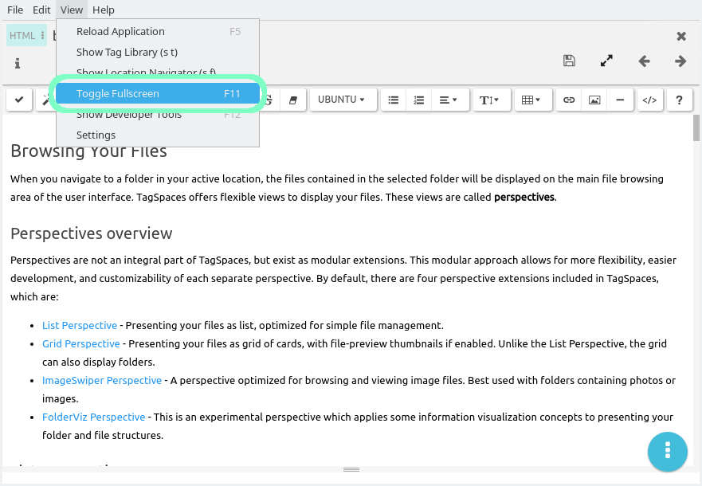

User Interface
Table of Contents
- Start screen
- Vertical toolbar
- Browsing Area
- Preview area
- File properties area
- Folder properties area
- Dark mode
- Zoomable user interface
- Full screen mode
Start screen
TagSpaces opens up as a single-window application that tries to make the best use of any space available, be it large wide screens, or small mobile displays. The user interface, devised along the guidelines of Google's material design specifications, is very adaptable. The application will look the same, regardless of the operating system, or platform it runs under.

This streamlined experience offers familiarity and an ease to use the application across platforms, while you will need to familiarize yourself with its extensive features only once. The following screen shows a typical start screen of TagSpaces with the list of the available locations on left, and content of the currently opened folder with the default perspective in center of the application.

The user interface of the application consists of the following main areas:
- (1) Vertical toolbar - Is always visible and provides quick access to main parts of the application
- (2) Location manager / Tag Library / Search areas - Here you can manage the connected locations, the tag library or search for file and folders.
- (3) Navigation - Here you can switch the location or quickly navigate to parent folders.
- (4) Browsing area - This section is occupied by the so called perspective used for browsing files and folders.
- (5) Common actions area - Here you can access common actions for the currently opened file or folder.
- (6) File / Folder properties - Here you will find some properties for the currently opened file or folder.
- (7) Preview area - In this area you can preview and/or edit the current file.
Vertical toolbar
New in version 3 of the app is the vertical toolbar located in the most left part of the application. The toolbar is designed to be alway visible. Here you can quickly access the creation of a new file, switch between the location manager, tag library and the search panels, open the app setting or enable the dark mode.

Hint: Clicking a second time on the icons for the location manager, the tag library or the search area will close the whole area contain these sections. This could be useful if you want to have more space for file browsing or previewing.
Browsing Area
The file browsing area normally takes up he majority of the user interface. This is where all files from the currently active folder are displayed, either as a list, grid, or folder tree, depending on the active perspective. To learn more about the all file browsing features, navigate to the Browsing Section.

In the top left corner of the browsing area is placed a button with a briefcase icon (1) which open a dropdown showing a list of all locations. From this dropdown you can quickly switch to another location.
Hint pro: If you are currently using a cloud based location, the the icon of the button for changing the location (1) will be a cloud, in other cases the icon will be the briefcase.
The number above (2) shows the count of the files and folders in the current folder. If the file browsing area shows search results, then this number will represent the count of the found items.
The area above number (3) shows the name of the current folder, its parent folder name and name of the parent's parent folder in reversed order. The folder names are separated by slashes (/). The parent folders are shown only if the these folders are in the current location. Clicking on the name parent folders will navigate to them.
Folder context menu
Clicking on the name of the current folder or on the three dot icon above (4) will open the context menu for the current directory, which contains the following menu items:
- Open Parent Directory - Open the parent folder in the browsing area, only if the parent folder is located inside the current location
- Reload Directory - Reloads the content of the current folder
- Rename Directory - Opens the folder rename dialog
- Delete Directory - Open a dialog where you can confirm the deletion of the folder
- Show in File Manager - Opens the folder in the default file manager of the operating system
- New Subdirectory - Opens the folder create dialog, where you can enter the name of the new sub folder
- New File / Note - Open the dialog for creating new files / notes
- Add Existing File - Opens a file choose where you can select a file from your local files system, which will be added to your current folder in TagSpaces.
- Extract Content - Starts a data extraction process, where you can retrieve some additional meta information from the files in the current folder.
- Directory Properties - Opens the folder properties area
Preview area
When a file is opened, the main UI area splits into two, the rightmost page becoming the Preview area. TagSpaces is capable of natively displaying different file types, from markdown, through HTML and docx, to PDF or various image files. To learn more about all the viewable and editable files, and TagSpaces' full file handling capacity, navigate to the Viewing Files section and Editing Files section respectively.
The following screenshot show a JPG file (photo) with name IMG_0180 (1) opened in the preview area. Here the preview area uses the full width of the application windows. This can be achieved by clicking on button (5) from the preview toolbar. The preview area can be closed by clicking the button with X icon located on the right to (2)

The file preview toolbar offer some actions, some of them are described bellow:
- (3) Properties - Toggles the file properties area. This can be acchieved also by clicking on the file name or the file extension located on the left of (1)
- (4) Full screen - Opens the file preview in full screen. You can leave the full screen mode by clicking the ESC key of you keyboard or the by clicking the round green x-button which will appear in the top right corner of the screen.
- (5) Full width - Toggles the file preview in the full width of the application windows, by hiding the file browsing and areas in left panel of the app.
- (6) Open externally - Opens the current file in the default application of your operating system.
- (7) Download - If you are running the web version of TagSpaces, this button will start the downloading of the file, on the desktop versions the button will open file save dialog allowing you to make copy of it somewhere else on the file system (e.g. your Desktop)
- (8) Reload - Will reload the file in the file preview area
- (9) Delete - Will open a dialog, where you can confirm the deletion of the file.
- (10) Previous/Next - With the arrow button located above (10) you can open the previous or the next file from the current folder (or search results) in the preview area.
File properties area
Clicking the button with the i icon will open and respectively close the file properties area. Here you will find details about the currently opened files such as:

- (1) Name - Shows the complete name of the file with its file extension. Clicking the RENAME button located above (1) with switch the area to edit box, where you can change the name of the file.
- (2) Tags - Show the tags added to this file. Clicking on this area will open a dropdown where you can choose additional tags which will be assigned to this file.
- (3) Description pro - Shows the description assigned to the current file. Clicking on the EDIT will turn the description area in a edit box, where you can adjust the description of this file. Plain text and markdown formats are supported.
- (4) Date modified - Shows the date and the time when the file was last modified.
- (5) Size - Shows the size of the current file. Hovering the field will show the size in bytes.
- (6) Path - Shows the complete path of the file. Clicking on the MOVE button, will open a dialog, where you can move or copy the existing file to a new path.
- (7) Thumbnail pro - This area shows the current thumbnail of the file. Clicking on the CHANGE THUMBNAIL button will open a dialog, where can choose a new thumbnail for the file. The application supports adding a custom thumbnail to every file type.
Hint: The description field of files and folders supports basic markdown syntax.
Folder properties area
The folder properties is very similar to the file properties area. It can be opened and closed in the same way by the button with the i icon.

- (1) Name - Shows the complete name of the folder. Clicking the RENAME button located above (1) with switch the area to edit box, where you can change the name of the folder.
- (2) Tags - Show the tags added to this folder. Clicking on this area will open a dropdown where you can choose additional tags which will be assigned to this folder.
- (3) Description pro - Shows the description assigned to the current folder. Clicking on the EDIT will turn the description area in a edit box, where you can adjust the description of this folder. Plain text and markdown formats are supported.
- (4) Date modified - Show the date and the time when this folder was last modified.
- (5) Color pro - Shows the color which is assigned to this folder. Clicking in the color area (5) will open a dialog for changing the color of the folder.
- (6) Path - Shows the complete path of the folder.
- (7) Thumbnail pro - This area shows the current thumbnail of the folder. Clicking on the CHANGE THUMBNAIL button will open a dialog, where can choose a new thumbnail for the folder.
Dark mode
Version 3 of TagSpaces supports user interface themes. The community version is delivered with a light (which is the default one) and a dark theme. The themes can be switched with just one click on the button, which is emphasized on the following screenshot.

Zoomable user interface
The user interface of the application zoomable, this allows you to adjust the zoom scale according to your screen resolution and display size. In the desktop you can access the zoom functionality from the View in the Main Menu. Here you will find zoom in, zoom out functionality and also the possibility to restore the initial zoom factor with Actual size menu item.
In the following screenshot you will see the menu options from the View sub menu and also TagSpaces with zoomed in interface.

And here you will see TagSpaces with zoomed out interface.

Hint: If the application is running in a browser, please use the integrated in the browser zooming capabilities.
Full screen mode
The desktop application can run in a full screen mode, which can be toggled by pressing the F11 key, or selecting View -> Toggle Fullscreen from the Main Menu.

Hint: If the application is running in a browser, please use the integrated in the browser full screen mode capabilities.